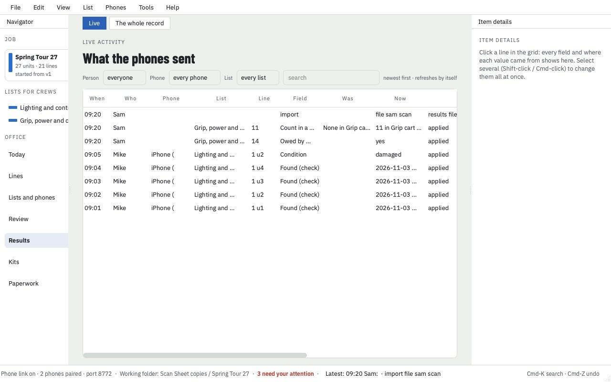
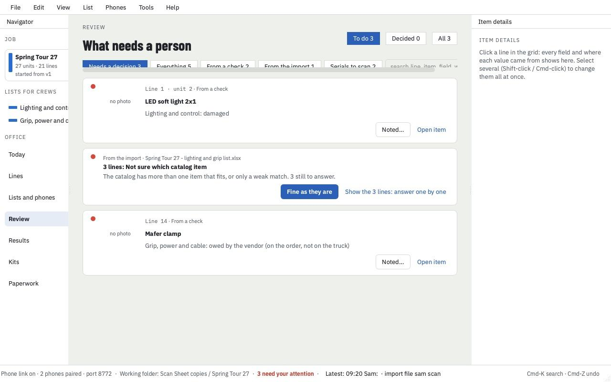

Why it exists
I'm a broadcast lighting designer. On most jobs the gear check is a printed rental list, a pen, and whoever has time. It works until something goes missing. Then nobody can say who counted that case, when, or whether the fixture was damaged when it came off the truck.
I built Scan Sheet so that question has an answer. The crew does the same check they already do, on their phones, and every tick, count, serial and damage note is kept with a name and a time.
Paul Lohr
What you get as the owner
- A record of who checked what, and when
- Every change from every phone, with the person, the list and the time. Filter by person or list.
- Problems in one place
- Damaged on arrival, owed by the vendor, extras the shop sent, lines nobody was sure about. Each one waits in a review list until someone decides.
- Serial numbers against your list
- Read from barcodes or labels, confirmed by a person, never guessed. Scan Office writes the next version of your manifest with them. Your original file is never changed.
- Photos where they settle arguments
- A photo on a damage note, and a photo of the signed delivery ticket.
- A report you can send
- Missing and damaged gear by case, ready for production or the rental house.


What it takes to run
| Your list | Starts from the list you already get: Excel or CSV. You check the column guesses once. |
|---|---|
| The office | Scan Office on a Mac with Apple silicon (M1 or later), macOS 14 or newer. Not Intel Macs. |
| The crew | Scan Sheet on their own iPhones, through Apple's TestFlight during the beta. They type their name and open the list. The crew guide is a few minutes long. |
| Connection | Phones pair with the office over your own Wi-Fi, encrypted. Without it, lists and results go by email. |
| Your data | Stays on your Mac and your crew's phones. No accounts, no cloud, no tracking. We never see your lists. Privacy page. |
| Cost | Free during the beta, until March 2, 2027. Some features may become part of a paid plan after that. |
What the crew sees
One list, one job: tick it, count it by case, scan the barcode or read the label, flag what's wrong, send it back. Lines that belong to another crew can be handed off, so they aren't reported missing.


Where it stands
It's a beta, in early testing. Everything above is built and in version 1.35. Not available yet:
- Importing PDF lists (planned; for now, the spreadsheet version of the list).
- Scan Office for Windows or Intel Macs.
Lohrbook LiDAR (iPhone), a room scanner that exports the raw data for CAD, Blender or AI, is also in development and not on the App Store yet. Its privacy page.
Try it on a real check-in
I'm looking for a few companies and crews to use it on their next load-in or return and tell me what got in the way. It's free, and you keep your data. Email me and you'll get the iPhone invite and the Mac download.
paultlohr@gmail.com
How it installs: install page. How it works: office guide · crew guide.